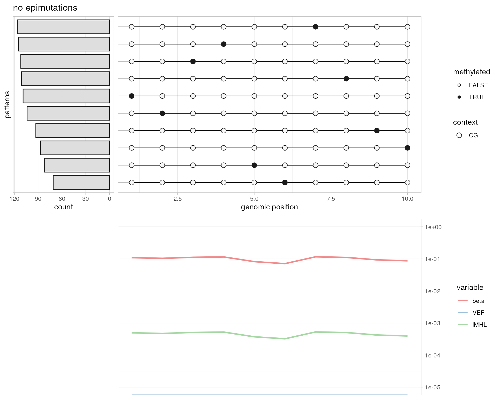
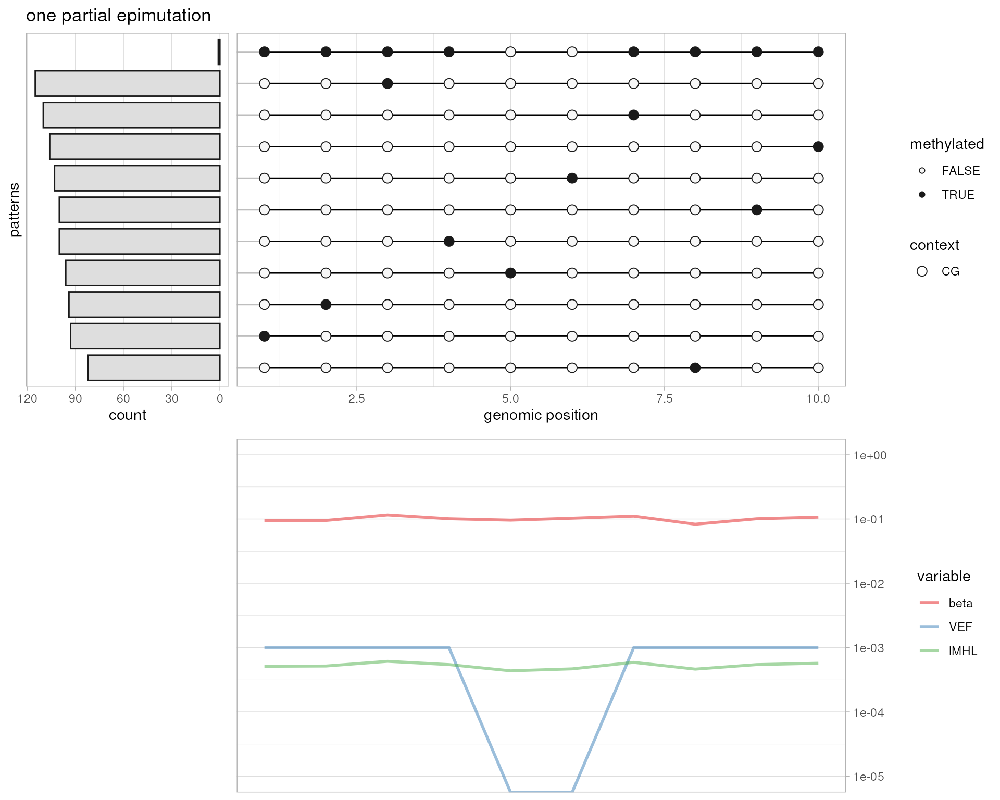
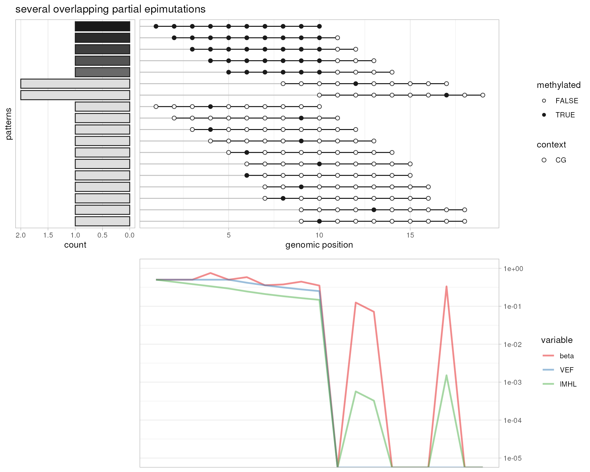
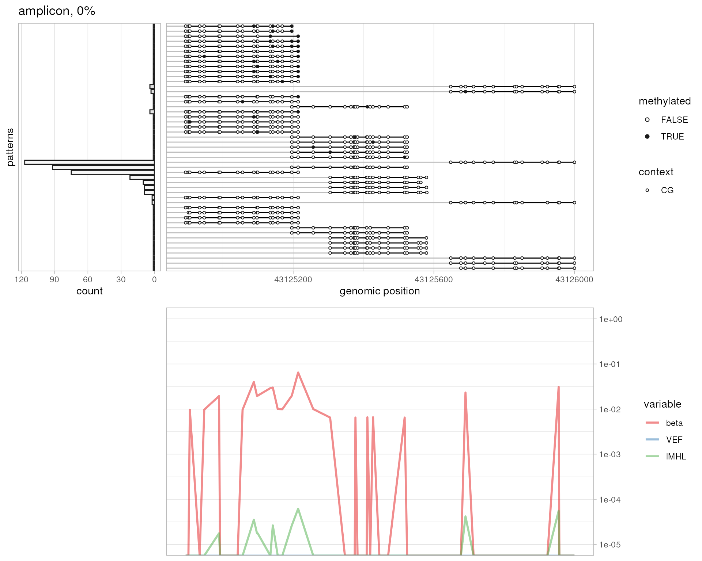
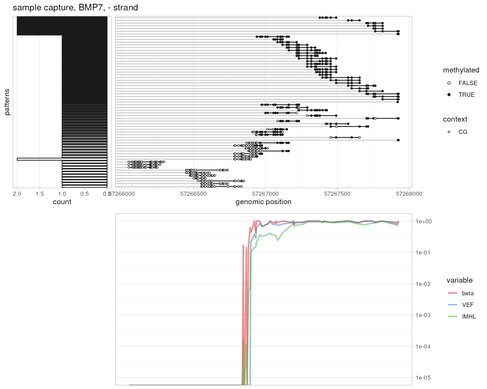

Abstract
A comparison and visualisation of epialleleR output values for various input files
Introduction
The best possible explanation on VEF and lMHL values is given in help
files for generateCytosineReport and
generateMhlReport methods, respectively. Here we
try to show some simplified and real situations, i.e., different
methylation patterns that may exist, and provide a visual summary of
epialleleR output.
The readers are welcome to try their own real and simulated data. If it might be of interest to others, please create an issue and these examples might get included in this vignette.
NB: the plotMetrics function used below is a piece of
spaghetti code, hence hidden. If you still want to use it or see what it
does - browse a source
code of this vignette online.
out.bam <- tempfile(pattern="simulated", fileext=".bam")
# no epimutations
simulateBam(
output.bam.file=out.bam,
XM=c(
sapply(
lapply(1:1000, function (x) sample(c("Z",rep("z", 9)), 10)),
paste, collapse=""
)
),
XG="CT"
)
#> Writing sample BAM [0.125s]
#> [1] 1000
plotMetrics(out.bam, as("chrS:1-10", "GRanges"), 0, title="no epimutations")
# one complete epimutation
simulateBam(
output.bam.file=out.bam,
XM=c(
paste(rep("Z", 10), collapse=""),
sapply(
lapply(1:999, function (x) sample(c("Z",rep("z", 9)), 10)),
paste, collapse=""
)
),
XG="CT"
)
#> Writing sample BAM [0.098s]
#> [1] 1000
plotMetrics(out.bam, as("chrS:1-10", "GRanges"), title="one complete epimutation")
# one partial epimutation
simulateBam(
output.bam.file=out.bam,
XM=c(
paste(c(rep("Z", 4), "z", "z", rep("Z", 4)), collapse=""),
sapply(
lapply(1:999, function (x) sample(c("Z",rep("z", 9)), 10)),
paste, collapse=""
)
),
XG="CT"
)
#> Writing sample BAM [0.133s]
#> [1] 1000
plotMetrics(out.bam, as("chrS:1-10", "GRanges"), title="one partial epimutation")
# another partial epimutation
simulateBam(
output.bam.file=out.bam,
XM=c(
"zZZZZZZZzz",
sapply(
lapply(1:999, function (x) sample(c("Z",rep("z", 9)), 10)),
paste, collapse=""
)
),
XG="CT"
)
#> Writing sample BAM [0.102s]
#> [1] 1000
plotMetrics(out.bam, as("chrS:1-10", "GRanges"), title="another partial epimutation")
# several partial epimutations
simulateBam(
output.bam.file=out.bam,
XM=c(
sapply(
lapply(1:10, function (x) c(rep("Z", 6), rep("z", 4))),
paste, collapse=""
),
sapply(
lapply(1:999, function (x) sample(c("Z",rep("z", 9)), 10)),
paste, collapse=""
)
),
XG="CT"
)
#> Writing sample BAM [0.110s]
#> [1] 1009
plotMetrics(out.bam, as("chrS:1-10", "GRanges"), title="several partial epimutations")
# several short partial epimutations
simulateBam(
output.bam.file=out.bam,
XM=c(
sapply(
lapply(1:10, function (x) c(rep("Z", 4), rep("z", 6))),
paste, collapse=""
),
sapply(
lapply(1:999, function (x) sample(c("Z",rep("z", 9)), 10)),
paste, collapse=""
)
),
XG="CT"
)
#> Writing sample BAM [0.103s]
#> [1] 1009
plotMetrics(out.bam, as("chrS:1-10", "GRanges"), title="several short partial epimutations")
# several overlapping partial epimutations
simulateBam(
output.bam.file=out.bam,
pos=1:10,
XM=c(
"ZZZZZZZZZZ", "ZZZZZZZZZz", "ZZZZZZZZzz", "ZZZZZZZzzz", "ZZZZZZzzzz",
sapply(
lapply(1:15, function (x) sample(c("Z",rep("z", 9)), 10)),
paste, collapse=""
)
),
XG="CT"
)
#> Writing sample BAM [0.006s]
#> [1] 20
plotMetrics(out.bam, as("chrS:1-20", "GRanges"), title="several overlapping partial epimutations")
# amplicon 0%
plotMetrics(
system.file("extdata", "amplicon000meth.bam", package="epialleleR"),
as("chr17:43124861-43126026", "GRanges"), title="amplicon, 0%"
)
# amplicon 10%
plotMetrics(
system.file("extdata", "amplicon010meth.bam", package="epialleleR"),
as("chr17:43124861-43126026", "GRanges"), title="amplicon, 10%"
)
# sample capture, BMP7
plotMetrics(
system.file("extdata", "capture.bam", package="epialleleR"),
as("chr20:57266125-57268185:+", "GRanges"), title="sample capture, BMP7, + strand"
)
# sample capture, BMP7
plotMetrics(
system.file("extdata", "capture.bam", package="epialleleR"),
as("chr20:57266125-57268185:-", "GRanges"), title="sample capture, BMP7, - strand"
)
# sample capture, RAD51C
plotMetrics(
system.file("extdata", "capture.bam", package="epialleleR"),
as("chr17:58691673-58693108:+", "GRanges"), title="sample capture, RAD51C, + strand"
)
# sample capture, RAD51C
plotMetrics(
system.file("extdata", "capture.bam", package="epialleleR"),
as("chr17:58691673-58693108:-", "GRanges"), title="sample capture, RAD51C, - strand"
)
# long-read sequencing, low methylation
getXM <- function (p) {sample(x=c("z", "Z"), size=1, prob=c(p, 1-p))}
probs <- (sin(seq(-2*pi, +1*pi, by = pi/125))+2)/3
simulateBam(
output.bam.file=out.bam,
pos=1:10,
XM=sapply(1:10, function (i) {paste(sapply(probs, getXM), collapse="")}),
XG="CT"
)
#> Writing sample BAM [0.032s]
#> [1] 10
plotMetrics(out.bam, as("chrS:1-1000", "GRanges"), title="long-read sequencing, low methylation")
# long-read sequencing, high methylation
simulateBam(
output.bam.file=out.bam,
pos=1:10,
XM=sapply(1:10, function (i) {paste(sapply(1-probs, getXM), collapse="")}),
XG="CT"
)
#> Writing sample BAM [0.030s]
#> [1] 10
plotMetrics(out.bam, as("chrS:1-1000", "GRanges"), title="long-read sequencing, high methylation")
Session Info
sessionInfo()
#> R Under development (unstable) (2024-02-07 r85873)
#> Platform: x86_64-pc-linux-gnu
#> Running under: Ubuntu 22.04.3 LTS
#>
#> Matrix products: default
#> BLAS: /usr/lib/x86_64-linux-gnu/openblas-pthread/libblas.so.3
#> LAPACK: /usr/lib/x86_64-linux-gnu/openblas-pthread/libopenblasp-r0.3.20.so; LAPACK version 3.10.0
#>
#> locale:
#> [1] LC_CTYPE=en_US.UTF-8 LC_NUMERIC=C LC_TIME=en_US.UTF-8
#> [4] LC_COLLATE=en_US.UTF-8 LC_MONETARY=en_US.UTF-8 LC_MESSAGES=en_US.UTF-8
#> [7] LC_PAPER=en_US.UTF-8 LC_NAME=C LC_ADDRESS=C
#> [10] LC_TELEPHONE=C LC_MEASUREMENT=en_US.UTF-8 LC_IDENTIFICATION=C
#>
#> time zone: UTC
#> tzcode source: system (glibc)
#>
#> attached base packages:
#> [1] stats4 stats graphics grDevices utils datasets methods base
#>
#> other attached packages:
#> [1] epialleleR_1.11.4 gridExtra_2.3 ggplot2_3.4.4 GenomicRanges_1.55.2
#> [5] GenomeInfoDb_1.39.6 IRanges_2.37.1 S4Vectors_0.41.3 BiocGenerics_0.49.1
#> [9] data.table_1.15.0
#>
#> loaded via a namespace (and not attached):
#> [1] DBI_1.2.1 bitops_1.0-7 httr2_1.0.0
#> [4] biomaRt_2.59.1 rlang_1.1.3 magrittr_2.0.3
#> [7] matrixStats_1.2.0 compiler_4.4.0 RSQLite_2.3.5
#> [10] GenomicFeatures_1.55.3 png_0.1-8 systemfonts_1.0.5
#> [13] vctrs_0.6.5 stringr_1.5.1 pkgconfig_2.0.3
#> [16] crayon_1.5.2 fastmap_1.1.1 dbplyr_2.4.0
#> [19] XVector_0.43.1 labeling_0.4.3 utf8_1.2.4
#> [22] Rsamtools_2.19.3 rmarkdown_2.25 ragg_1.2.7
#> [25] purrr_1.0.2 bit_4.0.5 xfun_0.42
#> [28] zlibbioc_1.49.0 cachem_1.0.8 jsonlite_1.8.8
#> [31] progress_1.2.3 blob_1.2.4 highr_0.10
#> [34] DelayedArray_0.29.1 BiocParallel_1.37.0 parallel_4.4.0
#> [37] prettyunits_1.2.0 R6_2.5.1 VariantAnnotation_1.49.6
#> [40] RColorBrewer_1.1-3 bslib_0.6.1 stringi_1.8.3
#> [43] rtracklayer_1.63.0 jquerylib_0.1.4 Rcpp_1.0.12
#> [46] SummarizedExperiment_1.33.3 knitr_1.45 Matrix_1.6-5
#> [49] tidyselect_1.2.0 abind_1.4-5 yaml_2.3.8
#> [52] codetools_0.2-19 curl_5.2.0 lattice_0.22-5
#> [55] tibble_3.2.1 Biobase_2.63.0 withr_3.0.0
#> [58] KEGGREST_1.43.0 evaluate_0.23 desc_1.4.3
#> [61] BiocFileCache_2.11.1 xml2_1.3.6 Biostrings_2.71.2
#> [64] pillar_1.9.0 filelock_1.0.3 MatrixGenerics_1.15.0
#> [67] generics_0.1.3 RCurl_1.98-1.14 hms_1.1.3
#> [70] munsell_0.5.0 scales_1.3.0 glue_1.7.0
#> [73] tools_4.4.0 BiocIO_1.13.0 BSgenome_1.71.2
#> [76] GenomicAlignments_1.39.2 XML_3.99-0.16.1 fs_1.6.3
#> [79] grid_4.4.0 AnnotationDbi_1.65.2 colorspace_2.1-0
#> [82] GenomeInfoDbData_1.2.11 restfulr_0.0.15 cli_3.6.2
#> [85] rappdirs_0.3.3 textshaping_0.3.7 fansi_1.0.6
#> [88] S4Arrays_1.3.3 dplyr_1.1.4 gtable_0.3.4
#> [91] sass_0.4.8 digest_0.6.34 SparseArray_1.3.3
#> [94] farver_2.1.1 rjson_0.2.21 memoise_2.0.1
#> [97] htmltools_0.5.7 pkgdown_2.0.7.9000 lifecycle_1.0.4
#> [100] httr_1.4.7 bit64_4.0.5